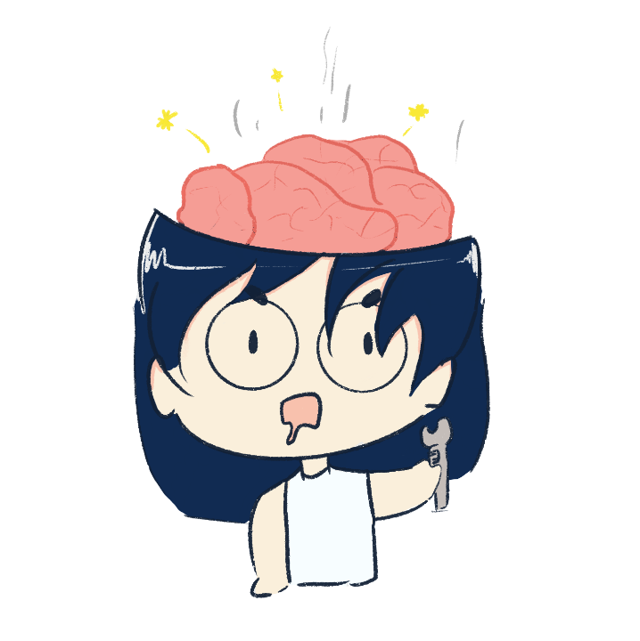

Homepage
What is all this?
Welcome to my chaotic, thrown together, I have no idea what to name it with three braincells of a website. Essentaily what I'm trying to tell you is welcome to my head.
On this site, we are going to talk about my project to submit as my final project by the end of the course. So sit back, relax and enjoy the show.
During our first lesson, I had an idea. I made a note on my phone on the way home about my brainstorm and what I wanted to or plan to make. This is my first drafting of an idea which might change in the future.
Initially the idea was an LED screen, showing time, weather, season...etc. This mini screen can be used as a table side decoration or can be used in the lobby of hotels for example as an aesthetic or a way of informing. I wanted to first create an alarm clock of sorts, table accessory which intergrates a system that changes gifs base on timing. I would also like to add in another option of being able to connect other similar devices through physical contact therefore eliminating the usage and the headache to for cable management.